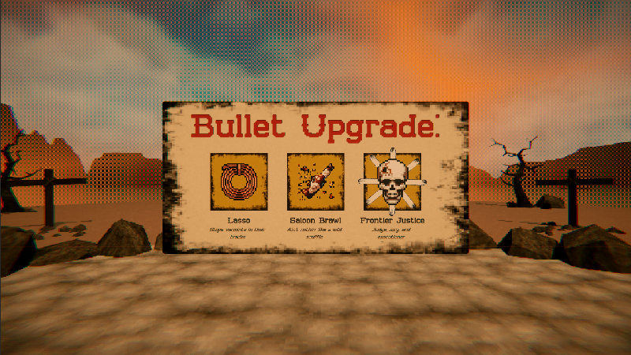
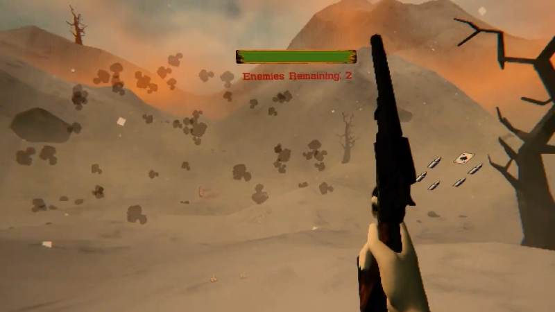
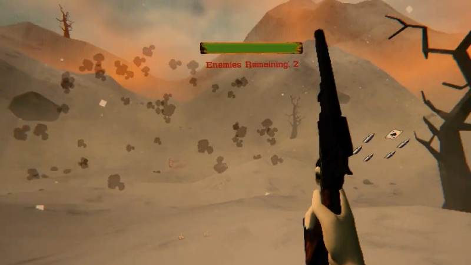

Six Shooter
An old-school, spaghetti western VR roguelike
Roles
Designer • Programmer • Artist
Technical Stack
Overview
Six Shooter is an old-school, VR roguelike, heavily inspired by
Spaghetti Westerns of the mid-to-late 1960s.
The game has two modes: a wave-based roguelike, and a target
practice. In the roguelike mode, the player has to take on an
onslaught of bandits, using only their trusty revolver and a variety
of bullet upgrades to survive. In the target practice mode, the
player has to shoot targets as quickly and accurately as possible to
earn the highest score and accuracy rating.
Using a mix of PS1-style graphics, pixel art particles and icons,
and a low-resolution fullscreen shader, the game has a unique and
engaging visual style to help separate itself from other VR games.
Showcase
Gameplay
Wave-Based Roguelike:
The main mode of the game, the wave-based roguelike mode is a
challenging and engaging way for players to test their skills.
As the game is based around the idea of a revolver having only
six bullets, each level has 6 waves, with 6 levels in total. At
the beginning of each level, the player gets a chance to upgrade
one of their bullets, with each bullet having a unique,
western-themed ability. The player must use these upgrades,
along with smart positioning and quick reflexes, to survive the
increasingly difficult waves of bandits.
Target Practice:
The first mode created for the game, the target practice mode is
a simple, yet engaging way for players to practice their aim and
accuracy. Although quite simple, the mode is set in an
old-western town to help set the overall tone for the game.
Additional Quirks:
Through UX testing, I found that players most enjoyed the reload
mechanic, the ability to shoot hats off the bandits' heads, and
pressing a button to simply yee-haw. Due to me forcing the
player to use all their active bullets before reloading, I chose
to add a gun-spinning mechanic for the player to use at any
point. This mechanic, similar to the hat shooting and
yee-hawing, is purely cosmetic, but is a fun and engaging way to
pass the time while waiting for more enemies to arrive while
immersing the player in the game's western theme.
Roguelike:
Target Practice:

Level Design
General Layouts:
Each level has a unique layout, with different obstacles and
cover for the player to use. The levels are designed to be
challenging, but also fair, with the player having multiple
paths and strategies to choose from while defending themselves
from the onslaught of bandits.
Level Variety:
As the game randomizes the order of levels on each playthrough,
it was important to create a variety of levels that each have
their own unique look and feel. The levels range from a small
town to a cave, mountain, and more. Each level has its own
aesthetic and challenges, keeping the game fresh and engaging
each time the player plays. At the moment, there are six total
levels, with more planned to be added in the future.
 

Visuals
Instead of trying to make the game look realistic, I aimed for a
PS1-style aesthetic, with low-poly models, a limited
color-palette, and a low resolution. This aesthetic helped to
give the game a unique look and feel, while also allowing me to
create assets quickly and efficiently.
To help further enhance the game's visuals, I used a fullscreen
shader that decreases the overall resolution and adds scanlines
to the game, giving it a more authentic, retro feel. I also
created a variety of pixel art for bullet and upgrade icons, as
well as particles for shooting, explosions, and more.
Sound
Six Shooter has a variety of sound effects and music that help
to immerse the player in the game. Each level has its own
soundtrack that plays during the playthrough, as well sound
effects for shooting, reloading, and more.
In addition to music and sound effects, there are plenty of
ambient noises that help to set the tone of the game. From the
sound of the wind through the trees to the steam engine of a
moving locomotive, the game is filled with sounds that further
enhance the game's western theme.
All of the sound effects and music were designed and hand-picked
to be fitting for the game's western theme, and to help create a
cohesive and engaging experience.
Challenges
Creating a game that is both challenging and fair, while also being
engaging and replayable is a tall task, but it is one that I
constantly aimed to improve. The game was designed to be difficult,
but it was important that the game did not become frustrating. As a
result, I often tweaked the game's difficulty, as well as added new
features and mechanics to keep the game engaging and fun to play.
With me being the sole developer of the game, I was responsible for
creating all of the gameplay and 3D models. Although a
time-consuming task, it also allowed me to have complete creative
control over the game's look and feel, resulting in a product that
is truly my own.